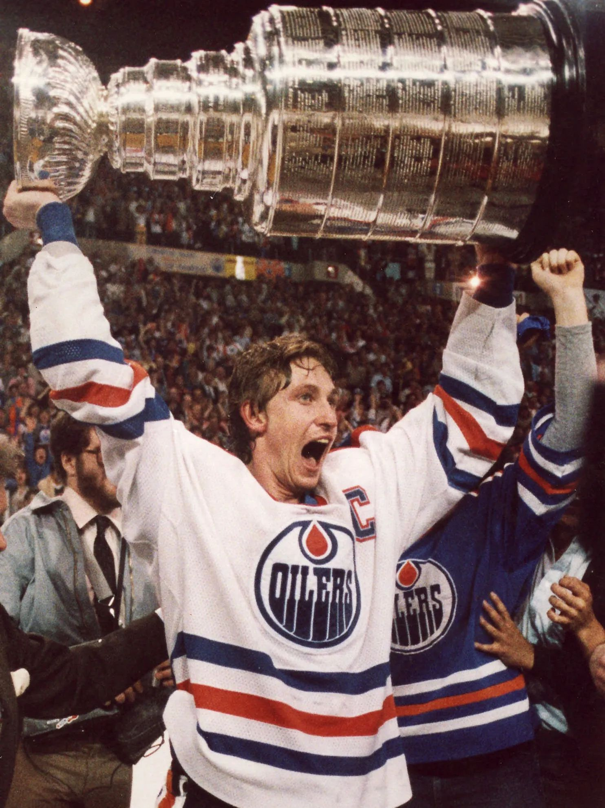

Determining the Greatest of All Time in All of Sports
By Dhyay Thakrar and Jeffery Meredith
Everyone has wondered who the greatest of all time is in all of sports. For each sport, people have their own GOAT like LeBron James or Michael Jordan for basketball, Lionel Messi or Cristiano Ronaldo for soccer, or Michael Phelps for swimming. But you might be thinking who is the stands out at the top when we compare all the sports? Maybe you think it is Usain Bolt or Roger Federer or Muhammad Ali. Today, we are in the quest of determining who is the Greatest of All Time in All the Sports and our answer might surprise you.
To determine which player is the greatest, we believe they should be competing in the toughest sport. We will analyse several attributes of 60 of the most renowned sports in the world to determine which is the toughest. By giving all the attributes equal importance, we have come to the conclusion that Basketball, Boxing, Wrestling, Football and Ice Hockey are the 5 toughest sports in the world. The radar chart below showcases these sports and the how much of each attribute is required for it.
According to us, some of the most important attributes that make a sport challenging are speed, agility, power, endurance and analytical aptitude. As you can see in the radar chart, Ice Hockey excels in all these departments and therefore, we came to the conclusion that Ice Hockey is the toughest sport of all.
To determine the best ice hockey player of all time, we analysed the most important statistics in the sport: goals, assists,
points, plus-minus and point shares. The scatter plot below will allow you to compare any of these two statistics.
(Be sure to
zoom out for each graph because one player stands above the rest!)
No mattter which combination of axes are chosen in the above scatter plot, Wayne Gretzky is always either the best or one of the best hockey players in the NHL. This leads us to conclude that Wayne Gretzky is the GOAT athlete from our dataset.
Known affectionately as "The Great One," Gretzky's unparalleled achievements in ice hockey make a persuasive case for his preeminence across all sports. His career statistics—overwhelming in goals, assists, and points—distinguish him not merely as an exceptional player, but as a transformative one. Gretzky redefined the possibilities of his sport, setting records that have stood the test of time and remain aspirational benchmarks. Beyond his statistical supremacy, his influence extended into the very fabric of hockey, altering the way the game is played and perceived. By embodying excellence, sportsmanship, and a transformative impact on ice hockey, Wayne Gretzky's legacy as the GOAT transcends the confines of his sport, placing him at the pinnacle of athletic greatness.